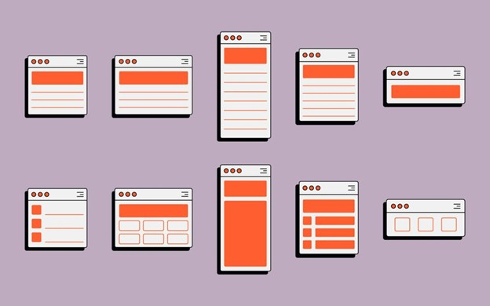
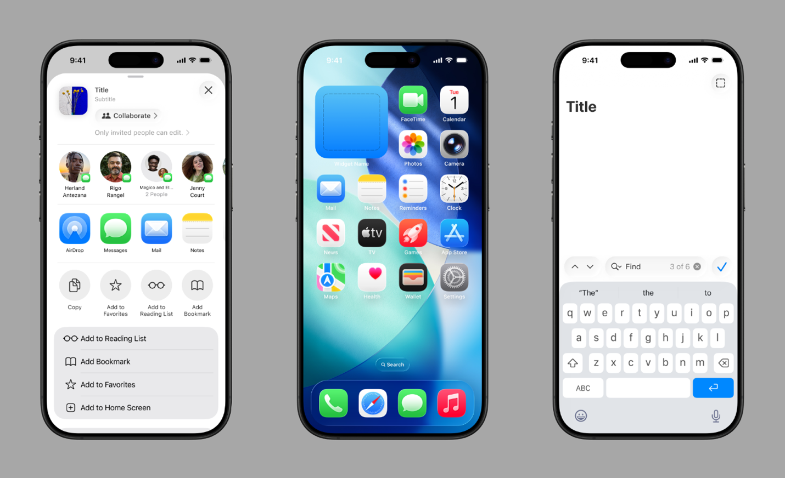
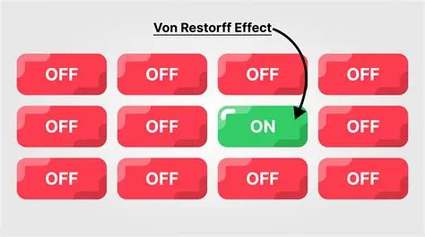
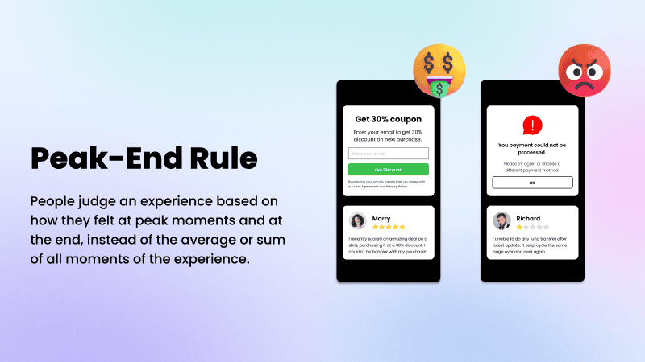
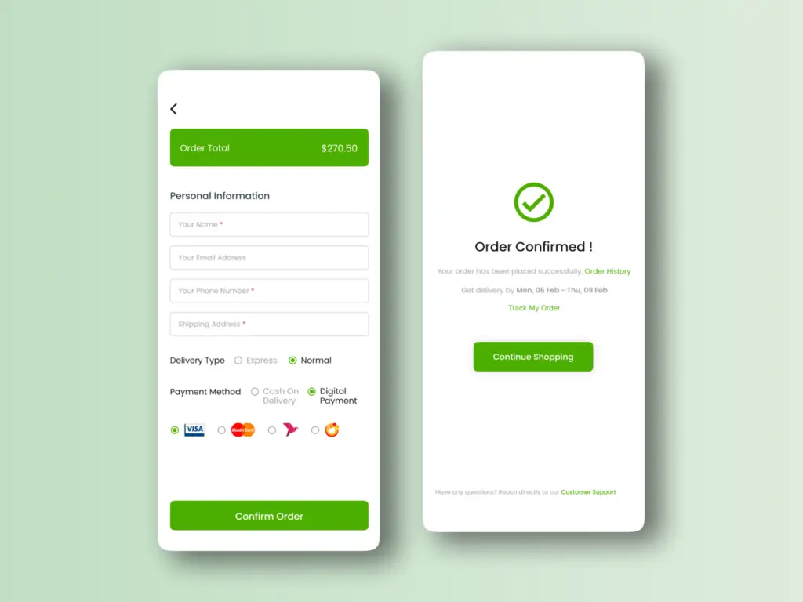

Why Modern digital systems demand a Model-Based approach.
Nine times out of ten, a digital system in today's world fails not because a single component is broken, but instead these systems fail because of multiple different components that behave in unexpected ways. Systems normally have three main reasons why they fail, complexity, communication, and understanding. According to the reading assigned in class, “The problem is actually worse than this as these three main causes feed into one another”. These systems are so complex and hard to understand that you can’t look at it from a linear perspective of thinking, instead it makes the most sense to move towards a systems thinking model, supported with a model-based approach. The software platforms, cloud and AI infrastructure, and other embedded systems are far too complex for document-based engineering, the text says, “The complexity of the world . . . and the systems that are being developed are increasing at an ever-expanding rate.” Model-Based Systems Engineering (MBSE) is the best way to handle this situation. Systems thinking is a way of looking at things that focus on how different parts connect rather than treating each part on its own. Systems thinking concerns rather than one part with the whole system, the process of how a system works, and trying to identify patterns to improve the system. For example, you could look at a program and ask, “How does this part work?”, systems thinking asks “How does this process affect the world and other systems around it, what does this process rely on?” because a system is not just a bunch of elements, instead it is made up of interactions that shape how it behaves, the different relaitonships and the pieces that connect them, it also requires looking at stakeholders, context, needs, and constraints of a system.. A system is always viewed in context, and boundaries help define what is inside the system and what's outside the system.
How Systems Thinking differs from Linear Thinking
Linear thinking is cause and effect thinking, one problem or cause has one effect, sometimes this kind of thinking if very forward and very useful, your phone runs out of charge and dies, your phone died (effect) because it had no charge (cause), once you charge it again your phone will turn back on. Linear thinking assumes that cause and effect are predictable; documentation can fully describe system behavior, and that optimizing parts optimize the whole system. The text explains that linear (reductionist) thinking approaches can fail when systems become large and complex to think about linearly, they differ because with systems thinking it focuses on interactions, interfaces, needs and constraints, while linear thinking focuses on individual components. It is extremely important that digital engineers think using systems rather than linearly, according to Scott Altham from Medium, “Engineers can fall victim to considering only the part of the system they’re changing, and this can have detrimental effects.” For example, when working with a digital system you need to find ways to try and make everyone happy, the shareholders, the scope of the project, and needs and constraints. Which could look like making a product that appeals to everyone, but also has to be delivered on time, not go over budget, and include or exclude all of the features that are defined.
Digital Systems are complex
Digital systems are evolving constantly through new updates, integrations, and the changing of stakeholders needs, a model-based approach lets engineers design elements and behaviors of a system, analyze the impact of proposed changes before they can be implemented, maintain consistency across all organizational boundaries within the system. To put it shortly, models are easier to update and maintain than document-based systems, making them ideal for complex digital systems.
Conclusion
Systems thinking provides a mindset required by today's world to understand complex digital systems, while linear thinking provides a one way look and doesn't provide much insight to the problems, model-based systems ensure that the complex systems can be managed. Systems thinking can provide solutions to the dynamic and interconnected nature of today's digital systems.
Human Centered Design: ISO 9241-210 vs IDEO Field Guide
Introduction
Have you ever been browsing a website or using a service like a food delivery application and noticed that the experience is frustrating, unintuitive, or downright ineffective,
this is most likely because the developers of the system did not take humans into account when creating the digital design. Digital design is extremely important to give users a good experience, make problems and tasks easy to solve, and be visually pleasing. All while balancing the stakeholders and users’
direct needs. This is where human centered design comes into play, human centered design solves all of these challenges by simply taking the human aspect into account, the size and distance between clicks, what they icons or descriptions say when trying to navigate a website.
In this blog post I will introduce the concept of human centered design, the ISO 9241-210 and IDEO field guide to human centered design, comparing and contrasting the two, then finally I will go over the four laws of user experience (UX) to support this analysis.
Human Centered Design
Human centered design is a problem-solving process that puts real humans at the core of the design process, the main goal of all design is to create interactive systems that are efficient and easy to use. This can range to anything from medical devices, websites,
applications, or physical interfaces like a microwave, because if I am being honest, no matter how good a product is, most people wouldn’t want to use it if the design is unintuitive or hard to use. Putting real humans at the forefront of the design process,
figuring out their needs, gripes and issues, and preferences makes for a design where users want to stick around and use the product/service again, this can lead to lifelong customers, more of a return on profit, and boost customer satisfaction.
The Harvard business school states that there are four stages in human centered design: 1. Clarify 2. Ideate 3. Develop and 4. Implement (Landry, L.).
The first stage is all about researching and clarifying what the customers want, instead of just assuming, which can lead to a multitude of problems down the line such as building the wrong design, low retainability, or getting the project retired/shut down.
Whereas when you research and look into customer behavior and wants, you will find higher adoption rates and satisfaction.
The second phase is all about brainstorming and coming up with multiple different ideas to try and solve users problems, in this stage a designer would need to work with a team and create multiple different ways of tackling the design, thinking of only one solution as the answer could lead to bias within the design.
The third phase is when you start to analyze your ideas from stage two, the ideas get reworked based on the research done and three key parts of human centered design, desirability: which asks if the solution fulfills or hinders the users needs,
feasibility: which asks if the idea is even possible to execute and what boundaries might come up, and lastly viability: which asks if this is a smart idea, one that can be sustained for future usage.
The final stage is where you test out your design, you can do this by having users or stakeholders try out the design and getting feedback, good and bad. From there you can go back to any of the stages to rework and refine the design. This will happen more often than not because human centered design is not something that is 100% right the first time around. It takes time and reworking.
ISO vs IDEO
ISO 9241-210
The goal of this ISO standard is to guarantee that designs can be created by the human that is having the problem, this is done with the help of knowledge in ergonomics, human factors, and usability suitable designs (user experience design CH.4).
When using this model it is imperative that there is already an understanding of the users and their needs, and how their environment might be set up, a team is required to implement this model. Like the Harvard business model, the ISO model is
like a loop, it starts with planning the design centered around human needs, clarifying the context of use, clarifying the requirements of the system, producing ideas and solutions to the issue, then evaluating and going back to the aforementioned
steps if needed (which will happen). The model asks a few questions to start the design process. What is the purpose of the system? What risks might happen from low usability. And which environment does development take place (user experience CH.4).
Once that step has been completed the model moves on to figuring out the context of use which describes the users themselves, tasks they might complete, equipment such as hardware and software needs, or peripherals for desktop/mobile use, and the environment.
The ISO model says that a “context of use description” ensures that this stage is successful.
IDEO Field Guide
IDEO is a company that focuses on human centered design for other organizations where they utilize systems thinking to make decisions. The IDEO guide’s goal is to look at all problems as if they are solvable no matter what, believing that the people who look at
the problems are the ones who hold the “key” to the solution (IDEO Field Guide). Their approach is one of failure, not as a negative however, they believe that failure is the best way to succeed at human centered design. By failing, ideas can be fixed and innovated
in a way that leads to creative solutions, it is not a linear process, but it is one that works.
IDEO’s perspective is that no two design projects are alike, yes you can draw from past experience and toolsets used in the past, but every design needs new ideas, creative thinking, and collaboration with humans to create that design. Empathy is a big part of the
design process, in order to understand people’s issues and how to solve them, you need to empathize with them by putting yourself in their shoes and trying to understand difficulties or successes to open yourself up to new solutions that would not have been thought of otherwise.
The ISO model offers a very technical perspective on human design and lays out steps exactly for what is needed to create a human centered design that is successful and works for the users’ needs. The IDEO field guide is more about methods and generative ideas with a team using empathy
and other strategies to get to this human centered design. In my opinion it would be good to take ideas from both models to get the best of both worlds, there is valuable strategies and methods in each to complete this task.
UX Laws
In user experience there are four commons laws that dictate how a digital design should be set up and thought out to ensure an efficient human centered design. These four laws talk about users preferring familiar patterns, the time it takes to get to a target, decision time based on the number of choices, and short-term memory limits.
Jakob’s Law
The first law, Jakobs law says that users have preconceived expectations of design’s based on passed experiences from other websites/services (Laws of UX, CH 1.). Most of the time when a user visits a new site there are always staples that they would recognize,
a search bar, a settings tab, and if it’s a retail website, different tabs based on the type of product they are looking for. For example, on a website like REI where you can buy outdoor gear, they have their products separated by activity, camping, backpacking, rock climbing, and snow sports.
From there users can specify which type of product based on the activity, camping: Tents, backpacking: backpacks, rock climbing: quickdraws, and snow sports: snowshoes. When users feel like they don’t understand a website because it is too different from what they are used to they are more likely to leave the site and get frustrated.
Fitt’s Law
Fitt’s law is all about usability, in this case it focuses on the navigation aspect of usability, Fitt’s law states that, “interaction should be painless and straightforward, requiring minimal effort” (Laws of UX, CH. 2). The time and distance to an objects relative size, a clickable object like a search bar in this case is what fixes these issues.
There is a fine line between when objects are too small, making it frustrating, or they are too big and making the design unnecessary.
Hick’s Law
Hick’s law talks about the number of choices that users are given when on a digital design, simply, when there are too many choices, it can overwhelm users and take more mental energy to process what they would like to choose.
Miller’s Law
Miller’s law talks about the number of items in a navigational field, specifically with short-term memory of users, it is commonly misunderstood however, as in the law Miller said that the number of stimuli a user could handle at one time is 7 plus or minus 2. When in fact this law should be understood as chunks, for example when writing a paper,
you cannot just have a huge wall of text, this will require too much mental energy to focus, instead, to have a clean cut paper you would create headings, subheadings, multiple different paragraphs, and leave white space in between to make it easier to read.
User Thinking, Mental Models and Consistency
Introduction
Today for Blog post 2.2 we are going to be talking about design, it isn’t just how something looks, more importantly digital design is about how something works, how it can be remembered by the user while supporting their thinking. In other words, usability is not just a goal,
it is a psychological need that works between human thinking and system complexity, if digital designers ignore how humans think and behave, the system will be inefficient and hard to use. To explain this, we will be talking about what makes these digital systems usable, explaining
how memory and mental models influence users’ decisions. How interface consistency and feedback can support users’ needs and improve efficiency and usability of a digital system. Then we will go over some poor design choices and how this can affect users’ thinking, and finally,
talking about Tesler’s law and how this relates to digital design choices.
Mental Models
Mental models, whether we think about them or not, are how we navigate and use the digital world, there are many different mental models that we as humans use on a daily basis. Mental models help users predict how a system will work, which in term influences how they interact
with the system (Chan, M, 2024.). Mental models work like this, before you log onto a website such as Nike.com, you have bias on how you think the site should work based on your past experiences from other websites like it, you know that there should be different tabs for
different types of clothing, (Hats, shirts, shoes, and pants), you know that there should be a search bar to look up specific items, there should be a filter tab that lets you change what you are looking for based on things like color, size, availability, long sleeve, short sleeve.
From there you use the site, browsing and shopping and you create these predictions and expectations inside your mind about how the site works as you get more familiar. This is how mental models are created, then the next time you go to a site similar to Nike.com, or even back to Nike.
You will already have preconceived bias on how to shop and buy your items.
One way that this is done is through recognition. Recognition is activated by perceptions that enter your mind through sensory systems, when they reach the brain, it forms patterns of connections that help you call back on that perception based on the features of the perception and
the context that you got it from, recognition is perception and your long term memory working together (Johnson, J, 2020). This relates to digital design because recognition is one of the main ways that we as users can navigate almost any site (that was designed well) like we know it
from the back of our hand even if it is the first time entering the system. All recognition is, is identifying familiar patterns, this is why search bars, menus, the back button, icons, and filters are so powerful, because they reduce the need for users to remember a new form of one
of those elements every single time visiting a new system, therefore reducing the cognitive load on users. Designers know this, which is why most of those elements mentioned above are pretty standard when it comes to digital systems.
Once mental models and/or habits are learned, they are hard to be broken, users expect this to repeat across multiple different systems, when these patterns are changed or broken without a clear understanding of why, they break the users focus and require more cognitive load to be used.
This is why you’ll see a lot of the time, redesigns of systems are met with backlash, most of the time this is not because the users hate the new system, a lot of the time redesigns are necessary, and updates make systems look fresher and operate better. This is because users already
have an established mental model about the system and do not like it when those models are changed.
Interface Consistency
Consistency is one of the most important design principles that a designer can use when creating a digital system, like most of the other techniques or principles we have talked about in these blog posts. But as you’ve most likely heard, consistency is key, in my opinion this makes
it one of the most important principles of digital design. Users like it when things are easy to understand, easy to navigate, and when the system provides a comfortable experience which reduces cognitive load when trying to use a system. As I mentioned earlier, elements such as navigation,
terminology, and design patterns should always remain uniform and adhere to standards seen on other systems. This means creating interfaces that users know what to expect, where buttons and actions are familiar and feel cohesive to the system (Yale). To achieve consistency in your interface,
you can follow these techniques:
- Visual Design Patterns
- Keeping elements uniform across touchpoints. This could be using the same color scheme throughout the system, same fonts, spacing, and icons.
- Functional Behavior
- Elements should be functional and work similarly. This could be using consistent patterns for feedback, or checkout processes always stay the same.
- Tone
- o Writing style and terminology should stay the same throughout the system, don’t switch terms halfway between one part of the site and another. For example, if the site has a logon feature, keep it as “log in” and don’t switch to “sign in” on another part of the system (Yale).

Tesler’s Law

Tesler’s law is known as the law of conservation of complexity, written by Larry Tesler, a computer scientist who was developing the language of interaction design, he realized that consistency would help not only users but designers because the standards would be enclosed in shared libraries.
Tesler worked at apple and created a “generic application” that allowed designers to create their own applications by modifying the generic application to their needs (Yablonski, J. 2024, p36).
Tesler’s law states that for any system there is a certain amount of complexity that cannot be reduced. What this means is that in every system, there will always be some amount of complexity that the user needs to navigate through using cognitive load. This is not without saying however,
that this complexity needs to be everywhere, there will always be fields or elements that users will need to navigate with some thinking. For example, when you put your address on a food delivery app like Door Dash, you most of the time fill it out manually, but the developers can make this easier for users.
If you have your home address saved on your mobile device, nowadays the delivery app and your phone operating system can communicate and see that you are trying to put in an address and auto fill it for you.
Poor design choices
Poor design choices lead to users feeling unsatisfied, disinterested, and nine times out of ten, the user will find another system that works better to spend their time on. Tesler’s law can help us understand this, since there will always be some amount of inherent complexity that cannot be removed,
digital designers must choose whether they as the designers create a system where the user handles the complexity, or the system does, when designers choose the latter, it creates less cognitive load for users. For example, when completing a form that requires you to put in your birthday, it is easier,
in my opinion to just type in the day (MM/DD/YYY) rather than have a drop down menu for each day or having to use a date picker that you have to click through multiple different times when you could simply just input the date. In my personal experience working for CWU’s IT department, whenever students
would create tickets for software licenses, they would almost never provide the correct information needed, they are required to submit a course name (IT_312) and their instructor’s name and email address so I could contact them and verify that this is necessary. Users would instead just submit the course name
(design the digital environment) and not provide information to contact their instructor. This made my job more time-consuming, having to reach out to the students rather than just getting all the information I need firsthand. If the form said something like this, “Please provide the course name that you are requesting
software for and include your instructors email contact information we can work on your request” and then provided an example at the end “(IT_XXX, instructor John Smith, smithJ@cwu.edu) this would let users know the format in which the data is needed and would allow for a much faster response time for the students to get
what they need to complete coursework.
Conclusion
In conclusion, what makes a digital system truly appealing is not just the visual aspects or features it might have, at the end of the day what makes a system work is, well how it functions, aligns with the way people already think with their mental models, habits, and stays consistent throughout the design process.
These are cognitive shortcuts that users will always have which in turn allows them to navigate systems with minimal cognitive load. When digital designers support these things, it creates a positive and efficient experience that users will more than likely come back to time and time again.
Tesler’s Law reinforces this by telling us that complexity will never go away, but it can be managed to provide the least amount of cognitive load as possible. When designers push the complexity onto the user it creates friction and disdain for the system. When designers do the opposite, and take on the load themselves, it creates an effortless system that feels seamless to use.
Ultimately, these kinds of systems that are usable are only created by designers who think carefully about human mental models, consistency, and human centered design. By choosing to do this, it will improve not only the system as time goes on, but create an intuitive, supportive, and human-centered experience.
Designing For Flow
Introduction
In this blog post today, we are talking about interface layout and control design, how this can make a digital
system easy and efficient to use, or make it extremely difficult to complete the task you are looking to do.
This post will go over how interface layout and control design influence users’ behavior, why layout matters
more than most people think. While also reflecting on the three user experience laws (Aesthetic-Usability Effect,
Von Restorff Effect, and Postel’s Law), and finally, go over a personal frustration that I personally have had with
a UX design and why it didn’t work.
How layout and design impact user behavior
We interact with digital interfaces almost every day in 2026, whether it’s logging into your company
portal, working on classwork, watching TV, online shopping, or just scrolling through the internet,
there have been designers who took the time and consideration to carefully design a product that encourages
behavior in small but powerful ways. This can either make or break a system.
Layout Matters More than you Think
From the textbook Designing with the Mind in Mind, we learn that users don’t normally
approach new digital interfaces with no beforehand knowledge, as I talked about in the
last blog post, users always have mental models about different interfaces that they
bring from past experiences good and bad. If users find aspects of the interface/layout
that are uniform or similar to their past experiences it will create a seamless and easy
experience to complete their tasks, on the other hand, if the layout is difficult to understand
or unintuitive, users will struggle (Johnson, 2020).
Humans naturally read text and look at screens in patterns that are predictable, for example,
the F-shaped pattern, which focuses first on the headlines and then moves horizontally and
vertically through the content of the page (Gerasimovich, I). This is almost the opposite
of how you would read a book; this is because most of the time when users are online, they
are hunting for quick answers, so users tend to look for the headline that would most likely
have their answer, then skim the text underneath. Digital designers also use size (Fitts’s Law),
color, spacing (Miller’s Law), and grouping to guide users towards a specific function.
One reason you will see well designed digital systems with similarly designed layouts to each other
is because consistency builds trust, going back to Jakob’s law we are reminded that users prefer to
work with systems that behave like the ones they already know how to navigate, more consistency reduces
the amount of cognitive load put onto a user to learn a new system. When it is the opposite, it makes it harder for users.
UX Laws
In this section I am going to talk about three UX laws that influence how users interact with interfaces.
1. Postel’s Law
As much as we would like to believe humans are consistent, focused creatures, we are not machines,
we get distracted, make mistakes, and can be extremely inconsistent at times, we still want to feel in
control at all times and can get frustrated when a digital system takes that away. Postel’s law, or also known as
the robustness principle, states that you should “be conservative in what you do and be liberal in what you accept from others.”
This means that you should anticipate almost anything in terms of what different variations a user could input and be able to accept
variable input from users, turning it into input that meets your requirements. To do this anyone using any kind of device must be
able to have feature support and be given a product that works (Laws of UX). The example the textbook uses and that I personally
think makes the most sense is with forms that users need to fill out, if not designed properly there is restrictions and can cause
frustration for users, for example when filling out a form there can be different formatting issues for you, imagine you are trying to
input your last name that has a hyphen in it, and the site simply wont accept it. Do you just take out the hyphen and have your name incorrect?
Or shorten it if possible? These are things that need to be thought about when digitally designing, this is why we have Postel’s Law.
2. The Aesthetic-Usability Effect
There has been all this talk about making sure your design is efficient, human-centered, and a good UX experience. At the end of the day,
your system might be the most efficient and easy to use from a UX design standpoint, and still not be aesthetically pleasing.
The aesthetic-usability effect states that a good-looking design can influence usability, this means that it creates a positive experience
for the user but also enhances the user’s ability to think cognitively and makes them believe that the design actually works better than it
really might (Laws of UX). One example of this is by looking at almost anything Apple produces in their digital interfaces, they are easy to
use and look quite stunning, they have a massive amount of attention to detail but still have their usability issues.

3. The Von Restorff Effect
Last but certainly not least is the Von Restorff Effect or also known as the isolation effect, this law says that when presented
with items that are distinctly different, humans will remember those items rather than similar items in similar categories (Laws of UX).
The best way to understand this law is thinking about the interactive buttons you see when browsing digital systems, you probably have
noticed how different buttons are highlighted when your cursor is over them, or buttons like “buy now” or “check-out” are in a separate
corner in the site. These buttons guide users to complete or navigate to a task the system wants you to, without the user even realizing it.

Personal experience
In my personal experience I have had multiple different experiences with bad UX design, the one that stands out to me the most is the CWU
employee portal that is designed to submit time on, I am required to submit my time every day and it sounds simple enough, but actually
completing this task feels like a puzzle. The task of submitting hours is buried under multiple different collapsible menus and difficult
to find unless you have done it a number of times. This design failed because the interface is honestly, outdated and cluttered with too
many different items to click through, this design is not aesthetic and therefore violates the aesthetic usability effect, the only reason
that I am able to navigate to it quickly is because I have trained up my mental model to accommodate for the different kind of system that
I have never seen before.
Conclusion
In conclusion, interface layout and control design may seem like small details to the normal user, but today we have found out that they have
an important impact on how users behave, and interact with a digital system. When layouts and controls align with users’ mental models, and
follow consistent patterns, they create efficient, and intuitive interactions that foster a positive experience for users. This reminds us
that good design isn’t just about looking good, it’s also about flexibility, consistency, and attention.
Interaction that Matters
Introduction
In this blog post today, I am going to talk about how well-designed interaction patterns such as timing, motion, and error prevention can shape a
meaningful and ethical environment for users to thrive in, no matter what they are attempting to complete. It will cover how feedback timing,
responsiveness, and motion affects how users feel, go over three more UX laws (Peak-End Rule, Doherty Threshold, and how with great power comes
great responsibility). Finally, I will close off this post by discussing the importance of ethical design and give some personal experience examples to help you better understand these topics.
How timing, responsiveness, and motion shape how users feel in UX
Digital interactions are more than just online shopping, completing work, or browsing the internet, they are emotional experiences that shape
how we feel while completing these tasks. From clicking a button, using a search bar, or waiting for a page to load, every single little interaction
someone is having with a digital system can shape how they feel about a system, often time designers will think about the systems they create with functionality
as tools, but users see them as something different even thought they might not realize it, systems can be calming, trustworthy, efficient and places where people
want to spend time, or on the other hand they can be frustrating, stressful, annoying, creating a bad environment for users to complete their tasks.
Timing, feedback, and responsiveness matter so much more than one might think, they completely change how efficient users complete a task,
how confident/trustworthy they are of said task, and most importantly, how in control the user feels about what is going on. This is why it
is important to not have a lot of delay between tasks, from the textbook, Designing with the Mind in Mind talks about how it is important to
not have large tasks that cause time delay for users, it is rather, better to break these tasks such as a setup wizard, into multiple different
tabs that take a few seconds (other than a download) to complete, this leaves the user engaged and allows them not to become frustrated by long
load times, or progress bars that feel like they are just sitting and not doing anything.
Responsiveness and the Peak-End Rule
Our first law of UX comes into play when talking about responsiveness, the peak-end rule, which simply put, is what users end up remembering
the most. As the textbook, Laws of UX states, the peak-end rule states that users will judge an experience based on our feelings, emotional peaks
of the experience, and the end result. What this means is that a single moment of annoyance or frustration can completely take away from an otherwise
good and efficient interaction, and at the end of the experience, a final message or confirmation showing a completed task is what users will really remember
about the system they use. This matters in digital design because a lot of times, there is wait associated with any product, it is almost unavoidable, for example
waiting on your DoorDash to be delivered, waiting for a software product to download so you can use it, or ordering a package off of Amazon. The responsiveness is
often the peak moment, this is when a system responds instantly, or if there is a delay at least you know why, for example, the peak for these moments could be when
you purchase the product and the final result would be, getting your food, finally playing the game you downloaded, or getting that package you ordered last week.

Feedback Timing and users’ patience
As discussed before in a past blog post, users create mental models based on past experiences of other systems and have preconceived notions
about how sites should be interacted with and work for the user, and in todays digital age, everyone expects digital systems to be quick and
efficient, we all are busy and it is easy for most people to think of a time when they had to wait on a system to complete a task and probably
given up to do something more productive or switch systems. If timing is violated and users are left in the dark, it can lead to confusion, annoyance,
and users losing trust in the system they are using.
Another Law of UX that comes to mind when talking about feedback timing is the Doherty Threshold, the Doherty Threshold states that speed is
key, system should load quickly and the tasks inside of a system should be smooth and efficient, the amount of processing time that it should
take is 400 milliseconds or less to complete a task by the system, this keeps users engaged with what is going on rather than leaving them waiting
for something to load or switch to a different page on a website for example.
This is why interactive systems should be designed to meet the time needs of users; a system should be responsive instantly about a user’s
action even if this action will take time (Designing with the Mind in Mind). For example, going back to the game download example, when you
purchase a video game you would like to play, you get a notification instantly that the purchase was successful and your game is in your library
ready to download, from there you can download it and you’ll be taken to a page that shows you the estimated time that the game will be completed.
Even though this process might take up to a few hours to fully finish, the user isn’t left sitting at their desk waiting and waiting for a game to
download for 20-30 minutes when it might take much longer than that.

Ethical Considerations when Designing
Designers hold massive amounts of power over users’ behavior, by using motion, timing, and responsiveness digital systems can be used to persuade,
guide, and make users choose decisions that they might make unconsciously. This is why it is important to stay ethical when designing, for example
while not unethical to some, scrolling feeds like tik tok and Instagram reels keep users engaged for hours by removing as much friction and power of
choice so that users can just continuously scroll and watch the next video hour after hour (Laws of UX). As the Digital Design Association states, one
of the ways that designers can stay ethical is by giving users their freedom and staying respected, they say that designers should make users sense of
freedom and equality as a user one of the top priorities, it is the designers responsibility to think of all the different kinds of people using their system
and not restrict anyone for any reason. I think that freedom should be a priority, but not the top priority, users should have their freedom to explore and not
be hindered by an equality standpoint. But obviously there are things you simply can’t allow users to do, thus taking away some freedoms they might have, since this
is common, I don’t believe it is a real issue, however.
Conclusion
To wrap all this up, know you know how feedback timing, responsiveness, and motion might seem like small details, when in reality they are one of
the biggest priorities for a designer, they influence emotion and can make or break a system. The Doherty Threshold tells us that speed is key and
users need quick and effective load times for their processes, the Peak-End Rule shows how emotional peaks and ends are what users remember after they
are done with a digital system, and that as Uncle Ben once said, with great power comes great responsibility, for designers to make ethical decisions when creating.